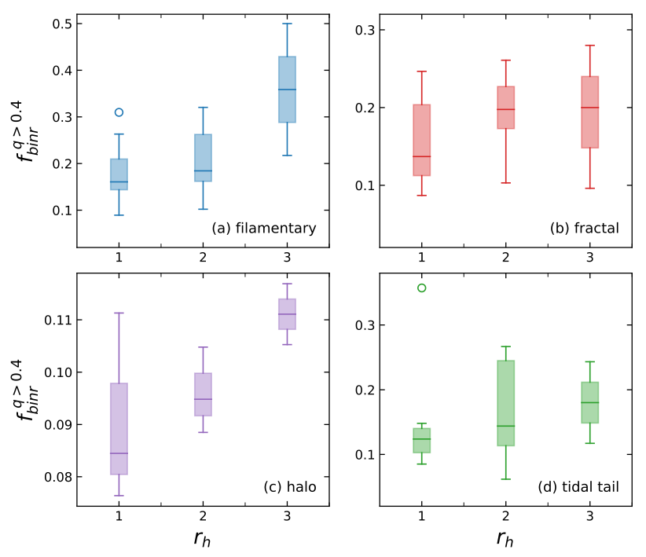

Using membership of 85 open clusters from previous studies (Pang et al. 2021a,b, 2022b; Li et al. 2021) based on Gaia DR3 data, we identify binary candidates in the color-magnitude diagram, for systems with mass ratio q>0.4. The binary fraction is corrected for incompleteness at different distances due to the Gaia angular resolution limit. We find a decreasing binary fraction with increasing cluster age, with substantial scatter. For clusters with a total mass >200 Msun, the binary fraction is independent of cluster mass. The binary fraction depends strongly on stellar density. Among four types of cluster environments, the lowest-density filamentary and fractal stellar groups have the highest mean binary fraction: 23.6% and 23.2%, respectively. The mean binary fraction in tidal-tail clusters is 20.8%, and is lowest in the densest halo-type clusters: 14.8%. We find clear evidence of early disruptions of binary stars in the cluster sample. The radial binary fraction depends strongly on the cluster-centric distance across all four types of environments, with the smallest binary fraction within the half-mass radius $r_h$, and increasing towards a few $r_h$. Only hints of mass segregation is found in the target clusters. The observed amount of mass segregation is not significant to generate a global effect inside the target clusters. We evaluate the bias of unresolved binary systems (assuming a primary mass of 1 Msun) in 1D tangential velocity, which is 0.1-1 $km s^{-1}$. Further studies are required to characterize the internal star cluster kinematics using Gaia proper motions.
 Image credit: Figure 5 in Pang et al. 2023.: Box plot showing radial binary fraction as a function of cluster-centric distance as half-mass radius (rh). For each panel shows four types of clusters: (a) filamentary , (b) fractal, (c) halo , and (d) tidal-tail.